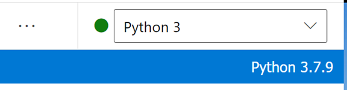

Azure Machine Learning
New: Please access Azure ML form your CAE Virtual Machine.
Accessing Azure Machine Learning
Dashboard
See the Dashboard section of this documentation from more information.
-
Click on the Dashboard menu from the Azure Portal. Your default view might already be set to dashboard.

-
Under Machine Learning , select the Machine Learning workspace that was created for you. If the workspace you want to open isn't listed, click on See more to access the complete list.
Azure Portal
-
In the Azure Portal Search box, search for Machine Learning.

-
You should see the list of the Machine Learning workspaces you were given permission to access. Select the Machine Learning workspace you want to access.

Machine Learning URL
-
Navigate to https://ml.azure.com/, sign in with your cloud account credentials, and select vdl subscription and the Machine Learning workspace that was created for you.
Getting Started
-
On the machine learning Overview page, click Launch studio.
-
Use the drop-down to select vdl subscription and the Machine Learning workspace you want to access, then click Get started.

-
Once inside your Machine Learning workspace, you can train, deploy and manage machine learning models, use AutoML, and run pipelines. See Getting started quickly for more information.
Using Azure ML Notebook standalone
Requirements
A compute instance in Azure ML. You should see it under Compute --> Compute instances.
Note: If a compute instance has not been created for you, please contact the support team via Slack.
Steps
-
Under Notebooks, create a new notebook in your user directory. You can then enter the code to execute.

-
Select the Compute instance assigned to you.

-
Click the run all cells button to execute your code.
Using Databricks Connect as Remote Compute
Disclaimer: Please note that the Databricks connect configuration shown below is under revision and will likely change in the near future.
Requirements
A compute instance in Azure ML. You should see it under Compute --> Compute instances.
Note: If a compute instance has not been created for you, please contact the support team via Slack.
Steps
-
Under Notebooks, open Terminal.

-
Select your Compute instance from the drop-down next to Compute.
-
Execute the code from Databricks Connect Setup in the terminal, while following the prompts to continue as needed. This code installs Python 3.7 and sets up a new kernel for Azure ML notebooks.
When prompted, enter the following values to configure Databricks connect:
Host: the URL from the Overview page for your Databricks workspace.
Token: the personal access token generated in your Databricks Workspace User Settings.
Cluster ID: the value found under Cluster --> Advanced Options --> Tags in your Databricks workspace.

Org ID: the part of the Databricks URL found after .net/?o=

Port: keep the existing value
-
Execute the following code in terminal to test the connectivity to Azure Databricks.
databricks-connect test -
Create a new notebook with Azure ML and select the Python 3 kernel. It should now display Python 3.7.9

-
Databricks connect should be setup now! Try the Databricks connect example code in a notebook, replacing public-data/incoming/1test.txt with the path to a file in your data lake container.
Request compute
Please contact the support team through the slack channel to request Azure ML compute. You will receive the following error when creating it yourself: